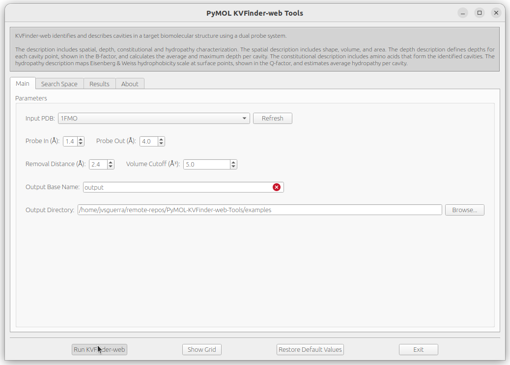
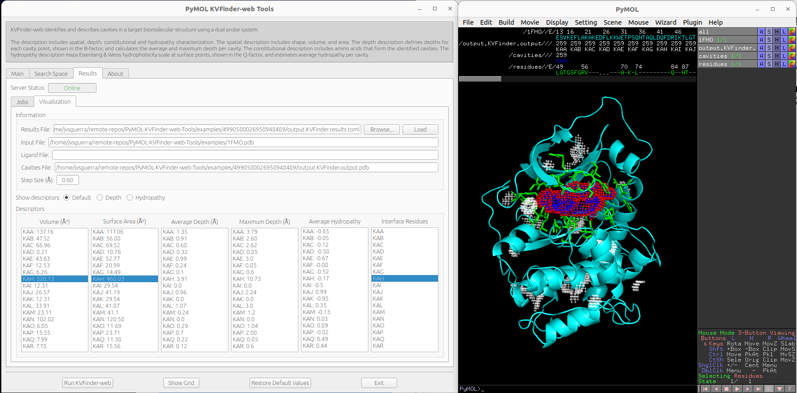
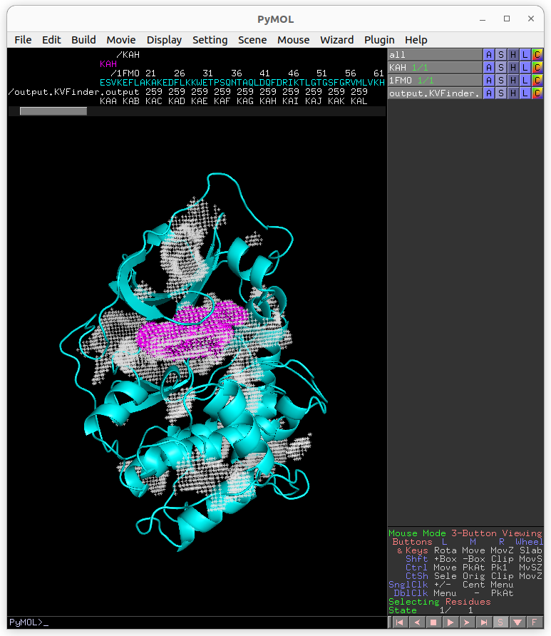
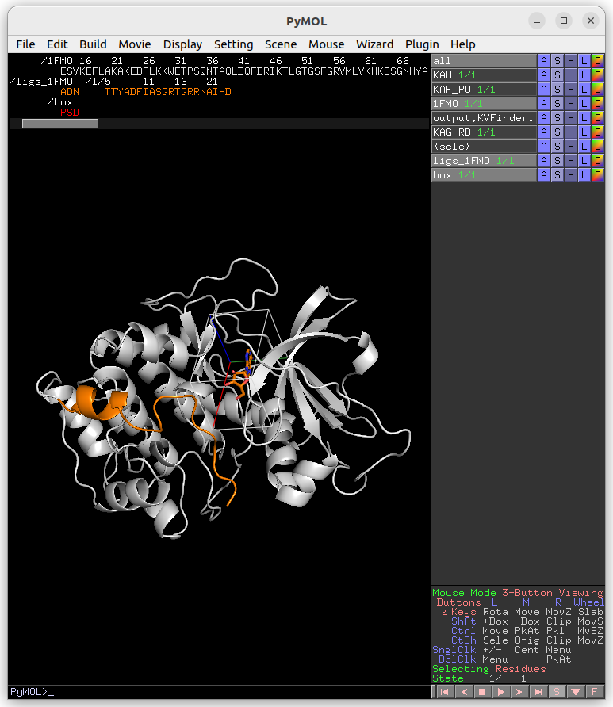
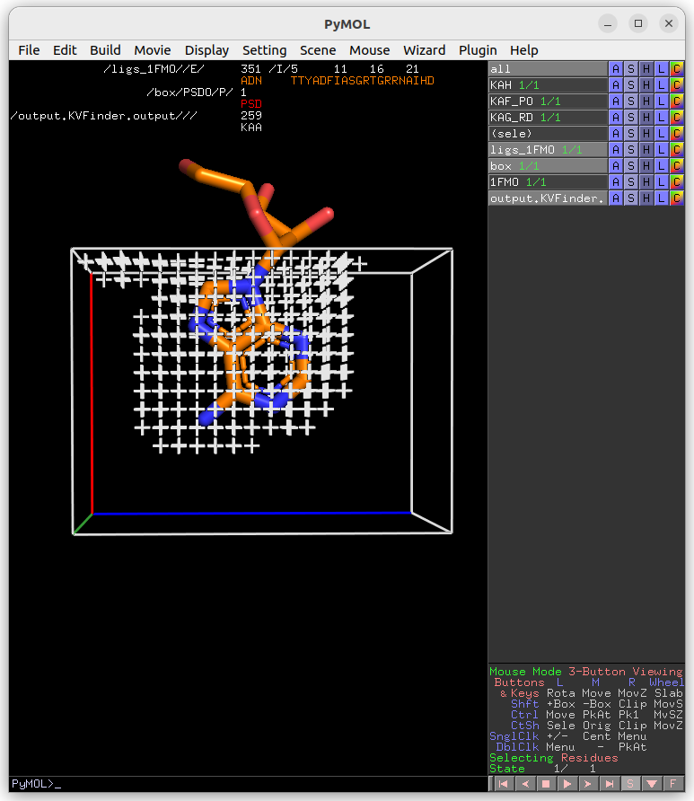

Tutorial¶
On this tutorial, we are going to demonstrate how to use PyMOL KVFinder-web Tools with our publicly available KVFinder-web service.
All files used on this tutorial can be found under examples directory, on the PyMOL KVFinder-web Tools repository.
Whole protein detection¶
First, load examples/1FMO.pdb into PyMOL. The 1FMO is the catalytic subunit of a cAMP-dependent protein kinase (cAPK).
After, open PyMOL KVFinder-web Tools under Plugin tab. The objects on the scene will be listed on the Input PDB box, on the Main tab. If not, click on the Refresh button.
The Input PDB selection sets which object will be analyzed by KVFinder-web service. Then, select 1FMO.

The default parameters are designed to make a simple and fast whole protein detection. To create a job with the default parameters, just click on Run KVFinder-web button.
{kind=link}
After successfully submitting the job to KVFinder-web service, a window will appear with the Job ID. For instace, the Job ID of our submission is 18100368098668549413.

The job informations are stored on ~/.KVFinder-web directory in TOML-formatted files and can be visualized on Results tab under Jobs tab. The status of our submission (18100368098668549413) is displayed on the Status field.

After completion, the Status field will change to Completed and the Show button will be enabled. Then, click on Show button load cavities into PyMOL viewer and the results on the Visualization tab. In addition, the focus will be automatically shifted to the Visualization tab.

We can select cavities in the Volume or Surface Area lists to highlight them on a new object called cavities, identifying each cavity. Additionally, we can select cavity tags in the Interface Residues list to highlight residues around the cavities on a new object named residues.
{kind=link}
Note
The interface residues surrounding the cavity KAF are colored in green (sticks), the surface points are colored in red (nb_spheres) and the remaining cavity points are colored in blue (non_bounded).
Changing cavity boundary¶
KVFinder-web service is all about parameters customization of parKVFinder software. One of parKVFinder’s most powerful assets is the ability to manually set the cavity boundary.
parKVFinder works with a double probe system to detect cavities. A smaller probe, called Probe In, and a bigger one, called Probe Out, that defined two molecular surfaces with different accessibility. The space left between these surfaces is considered cavities.
Let’s show the effect of varying Probe Out and Removal Distance on the cavity boundary.
First, we should copy the cavity KAF to a new object to compare cavity boundary from the previous execution.
# Copy KAF
select resn KAF and output.KVFinder.output
create KAF, sele
delete sele
# Color KAF
color magenta, KAF
Adjusting Probe Out¶
As mentioned above, adjusting the Probe Out size changes the level of the cavity boundary. So let’s go back on the Main tab and change the Probe Out size to 8.0 Å. Submit the job to KVFinder-web service again.
After completion, load the job results by clicking on Show button on Results tab under Jobs tab.
{kind=link}
Again, copy the cavity KAF to a new object (KAF_PO).
# Copy KAF
select resn KAF and output.KVFinder.output
create KAF_PO, sele
delete sele
{kind=link}
The cavity KAF detected with the 4 Å Probe Out (magenta) has a lower boundary than that detected with the 8 Å probe (white). Therefore, by increasing the size of the Probe Out, the cavity boundary is also raised.
Adjusting Removal Distance¶
Besides adjusting the Probe Out size, we can also adjust the Removal Distance to change the cavity boundary. So let’s go back to the Main tab and change the Removal Distance to 1.2 Å and the size of Probe Out back to 4.0 Å. Submit the job to KVFinder-web service again.
After completion, load the job results by clicking on Show button on Results tab under Jobs tab.

Again, copy the cavity KAH (same region of the previous detections) to a new object (KAF_RD).
# Copy KAH
select resn KAH and output.KVFinder.output
create KAH_RD, sele
delete sele

The cavity KAF detected with the 2.4 Å Removal Distance (magenta) has a lower boundary than that detected with the 1.2 Å (KAH; white). Therefore, by decreasing the Removal Distance, the cavity boundary is also raised.
Furthermore, changing the cavity boundary by varying Probe Out and Removal Distance also affects cavity segregation.
Note
Usually the Removal Distance adjustment is less time consuming than the Probe Out adjustment for similar effects.
Steered detection¶
An important feature of parKVFinder is the steered detection of cavities. We continue our tutorial illustrating two distinct methods of cavity segmentation.
First, load examples/ligs_1FMO.pdb into PyMOL viewer. The ligs_1FMO is an adenosine (ADN) and a peptide kinase inhibitor (PKI).
Box adjustment mode¶
Box adjustment mode explores closed regions with a custom box, which can be drawn via the GUI.
On the Search Space tab, select Box Adjustment check box. This will enable a Box Adjustment frame, which handles the custom box in PyMOL viewer
Then, select the adenosine ligand on ligs_1FMO object. This can be made on the PyMOL viewer by clicking on the ligand structure or using select resn ADN PyMOL command.
Click on Draw Box Button. This will create a custom box that limits the search space. It is fully customizable, but we will not change it for now.
{kind=link}
On the Main tab, change Removal Distance back to 2.4 Å and submit the job to KVFinder-web service.
After completion, load the job results by clicking on Show button on Results tab under Jobs tab.
{kind=link}
Now, let’s customize the box parameters to segment the binding site of our target protein.
Each axis is associated with one color (red with X, green with Y and blue with Z). The adjustment is made by the arrows or directly setting the value in the entry on the Search Space tab in the Box Adjustment group. We can also adjust the box angles by the same procedure. After altering the values, just click on **Redraw ** button to redraw the box object using the new values.
Then, on the Search Space tab, reduce Maximum X to 1.0 Å and click Redraw Box. Submit the job to KVFinder-web service.
After completion, load the job results by clicking on Show button on Results tab under Jobs tab.
{kind=link}
Lastly, click on Delete Box button to delete the custom box.
Ligand adjustment mode¶
A last feature is to limit the search around a structure. In this last example, let’s do a whole protein prospection again, but limiting the search space around ligands.
First, on the Search Space tab, deselect Box Adjustment check box, which will disable the previous enabled Box Adjustment frame.
Still on the Search Space tab, click on the check button Ligand Adjustment, which will enable the Refresh button, the Ligand PDB combo box and the Ligand Cutoff entry.
Afterwards, copy the adenosine (ADN) from ligs_1FMO to a new object.
# Copy adenosine
select resn ADN
create adenosine, sele
delete sele
Click the Refresh button to display all objects in the scene in the Ligand PDB combo box. Select the ADN on the combo box and reduce Ligand Cutoff to 3.0 Å. Submit the job to KVFinder-web service.
After completion, load the job results by clicking on Show button on Results tab under Jobs tab.

Now, let’s shift focus to the two ligands (ADN and PKI) in the ligs_1FMO object.
On the Search Space tab, select the ligs_1FMO on the Ligand PDB combo box and increase Ligand Cutoff back to 5.0 Å. Back on the Main tab, increase Probe Out to 10.0 Å and reduce Removal Distance to 0.0 Å. Submit the job to KVFinder-web service.
After completion, load the job results by clicking on Show button on Results tab under Jobs tab.
{kind=link}
Submitting an already sent job¶
Users may submit a job that have already been submitted to the KVFinder-web service and the job is still available on the web service.
In this scenario, when you submit the job, the Job Submission window will display the job status. If the job is completed, the GUI automatically loads the job into the GUI and PyMOL viewer.
For instance, resubmit your last job.


Retrieving a Job by its ID¶
Users may share their jobs with colleagues by the Job ID that they receive when submitting a job.
On the Results tab, under Jobs tab, click on the Add ID button. A new window (Job ID Form) will appear.

In this window, fill the fields and click on Add button.
If the job was not available on the KVFinder-web service or does not exist. A window will apper stating that the Job ID (XXXXX) was not found in KVFinder-web server!.
Otherwise, a window will apper stating that the Job successfully added! together with the job status. Additionally, this Job ID will appear on the Available Jobs combo box.